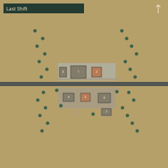

Last Shift
A working town whose machines outlasted its last payday.
Finished parts wait on pallets, the canteen is set for a shift that never arrived, and the manager has kept the only comfortable upstairs room.
Open town in the editor- Repair shop — An unfinished lathe job, boxed finished parts, and a clean service aisle.
- Manager office / flat — The payroll counter is downstairs; the manager kept a private room above it.
- Tool lockup — The useful tools have been packed away; loose spares remain on the bench.
- Worker family home — A modest family table and a chest packed for departure.
- Shift lodgings — A common room and four beds whose owners never came back for their things.
- Shift canteen — The tables are set; fuel and the cooking area are outside in the yard.
- Dispatch store — Finished goods arranged beside the loading apron, with nobody left to collect them.